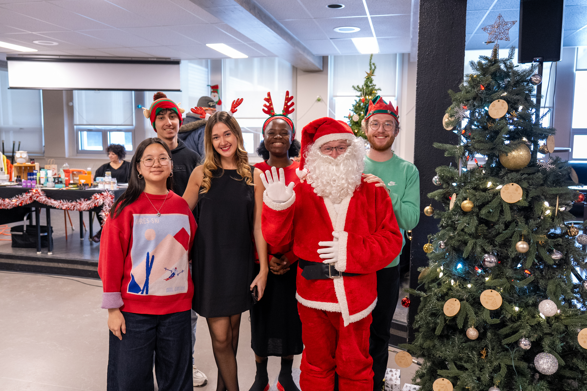

Organisation marché de Noël
Dans le cadre de ma formation en Techniques de tourisme, j’ai participé à la création et à l’organisation du Marché de Noël « Les Pépites de Noël » au Cégep de Matane. Ce projet consistait à concevoir un événement complet, de la planification à la réalisation, en passant par la coordination des exposants et l’expérience des visiteurs. L’objectif de ce marché était de récolter des fonds pour un voyage éducatif tout en créant un moment festif mettant en valeur des entreprises locales, et en développant nos compétences en gestion d’événement.
Pour ma part lors de ce projet j’ai était responsable de l'expérience visiteur et exposants, de plus j'ai grandement aprticipé à la recherche de partenaire financier.
En amont de l'événement
Dans le cadre de mes responsabilités, j’ai mené une recherche d’exposants en identifiant des entreprises locales et des artisans susceptibles de correspondre à l’esprit du Marché de Noël. De plus, j'ai proposé aux étudiants du Cégep de participer en tant qu'exposants. J’ai utilisé différentes méthodes, telles que les réseaux sociaux, les répertoires d'entreprise d'autres marché de noël local ainsi que le bouche-à-oreille, afin de constituer une liste de contacts pertinents. J’ai ensuite proposé la participation à notre événement à ces différents acteurs en mettant en avant les avantages pour leur visibilité et leurs ventes. Donc mes tâches principaux était de recruter et de communiquer avec les exposants, gérer les inscriptions, la coordination des besoins logistiques (tables, électricité, aménagement) et j’ai également contribué à assurer une expérience fluide et agréable, autant pour les participants que pour le public.


Le jour J
Le jour de l’événement, mon rôle consistait principalement à assurer un accueil professionnel et efficace des exposants, en veillant à ce que leur installation se déroule dans les meilleures conditions. J’ai supervisé la mise en place des kiosques en respectant les besoins et demandes spécifiques de chacun (emplacement, accès à l’électricité et à l'eau, espace requis), tout en optimisant l’aménagement global de la salle. J’ai également agi comme personne-ressource tout au long de la journée, afin de répondre rapidement aux imprévus et garantir une expérience positive pour tous. À la suite de l’événement, j’ai mis en place un suivi auprès des exposants à l’aide d’un questionnaire Google Forms, afin de recueillir leurs retours et d’identifier des pistes d’amélioration pour les prochaines éditions.
Compétences développé
- Gestion de projet : Grâce à l'organisation global de l'événement, dans lequel j'ai eu un grand rôel de coordinateur avec l'ensemble des autres reponsables.
- Communication professionnelle : J'ai dû énormement communiqué avec des professionnels, ce qui ma permis de développer cette compétence.
- Organisation logistique : J'ai développé cette compétence via la mise en place de tout les kiosques par rapport aux demandes spécifiques des exposants, ainsi que par toute l'orgnisation en amont de l'évenement avec les contraintes de l'établisement à respecter.
- Résolution de problèmes en temps réel : Un événement à toujours des problèmes, et celuic-i n'y a pas échapper. J'ai dû pour proposer la meilleure expérience possible à l'ensemble des exposants et visiteurs dû pallier à l'ensemble des problèmes techniques survenus.